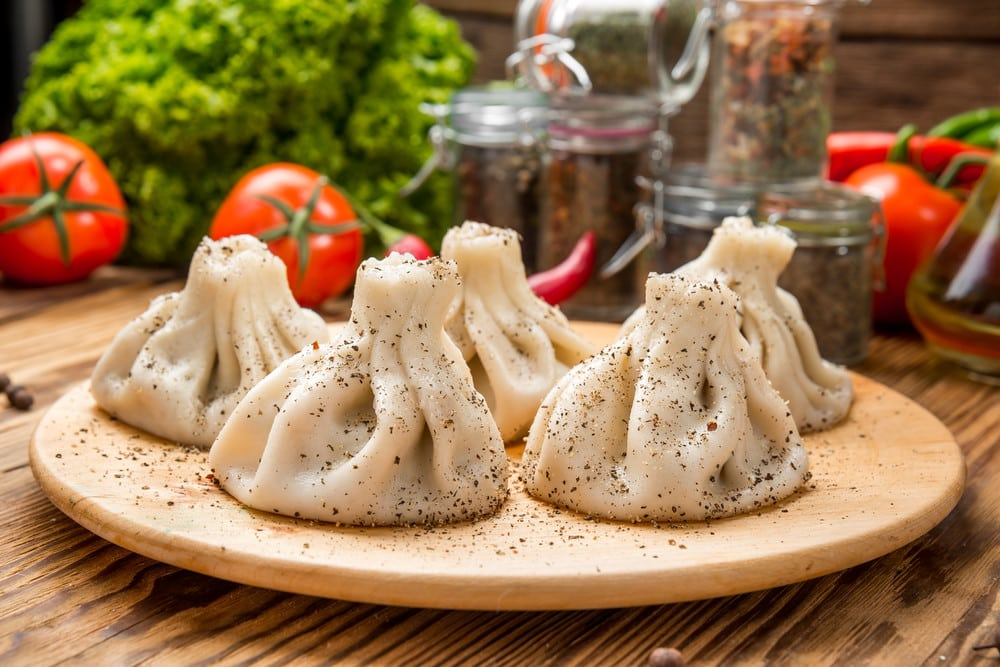
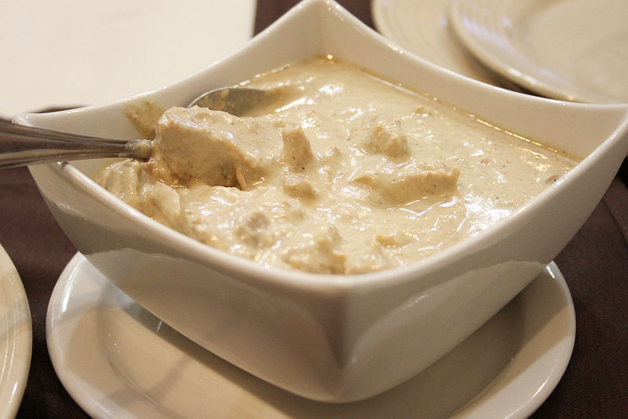

XINKALI
Khinkali (Georgian: ხინკალი/xinkali/ sometimes Romanized hinkali or xinkali) is a dumpling in Georgian cuisine.
It is made of twisted knobs of dough, stuffed with meat, fish or vegetables and spices.
The origins of the khinkali are not clear: some consider it a result of the Mongolian conquests, and others support it was created in the Georgian mountains.
According to some legends, khinkali originates from Mongolia and reached Georgia around the 13th century
(Georgia being located on the Silk Road). Mongolian conquerors would put their meat in dough in order to better conserve it while riding their horses. They themselves probably learned to make dumplings from their chinese neighbors.
However, according to other sources, the traditional dish was invented in th
e Georgian mountains North of Tbilissi. It used to be a dish eaten mostly by shepherds during cold and snowy winters.
The invention is disputed by both people from the Tusheti and the Pshavi regions.
Initially, khinkalis were stuffed with lamb as it was the most common meat eaten in the mountains. Then, variations were created as it became more popular and reached urban areas. Thus, pork or beef began to be used as a stuffing, and then vegetarian versions were developed.

XACHAPURI
Khachapuri Georgian: ხაჭაპური is a traditional Georgian dish of cheese-filled bread.
The bread is leavened and allowed to rise, molded into various shapes,
and then filled in the center with a mixture of cheese
eggs, and other ingredients.
The bread crust is traditionally torn off and dipped into the cheese.
It is very popular in Georgia, both in restaurants and as street food.
As a Georgian staple food, the price of making khachapuri is used as a measure of inflation in different Georgian cities by the "khachapuri index,"
developed by the International School of Economics at Tbilisi State University. It is Georgia's national dish, inscribed on the list of the intangible cultural heritage of Georgia.
On the behalf and initiative of the Gastronomic Association of Georgia, the 27th of February was announced as National Khachapuri Day
to celebrate Georgia's signature pastry as well as to promote its recognition internationally. Specialists are divided regarding the chronology of the khachapuri.
Indeed, according to Darra Goldstein who wrote The Georgian Feast about the dish, khachapuri probably dates back to the 12th century when Georgia experienced
a renaissance period but its specific root remains unclear.
Dali Tsatava, former professor at the Georgian Culinary Academy, suggested that khachapuri could be a
"cousin of the pizza" as the concept of the dish might have been brought by Roman soldiers who crossed Europe,
well before the advent of tomatoes in the 16th century.
SATSIVI
Satsivi is a Georgian dish made from poultry such as turkey or chicken put into walnut sauce.
The term satsivi is also used as a generic name for a variety of poultry made with the walnut sauce.
Satsivi (Georgian: საცივი) is a Georgian dish made with walnut sauce and served cold, either as a dipping sauce for boiled or fried turkey or chicken. Traditionally, satsivi is made of walnuts, water, garlic, a combination of dried herbs, vinegar, cayenne pepper, and salt to taste.[1] In this way, satsivi in the Caucasus is similar to the nut- or legume-based paste sauces to the south such as the hummus (which often contains garlic, lemon juice as a souring agent, and tahini, or sesame butter/paste) varieties found in Syrian, Lebanese, or generically Levantine cuisine.[citation needed]
Boiled turkey or chicken pieces submerged in satsivi is a staple of winter holiday feasts.
The dish as a whole is usually also referred to as satsivi.
There are also vegetarian varieties of this dish made with eggplants or cauliflower.
A similar dish of boiled chicken with walnut paste is known as Circassian chicken in Turkish
Levantine, and Egyptian cuisine, as well as "Aquz" in the Caspian cuisine of Northern Iran.
